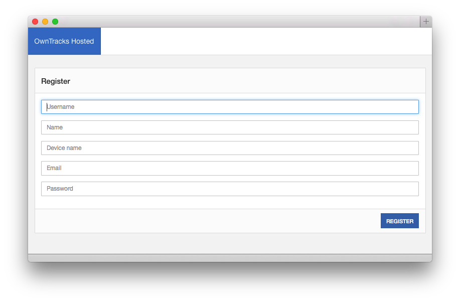
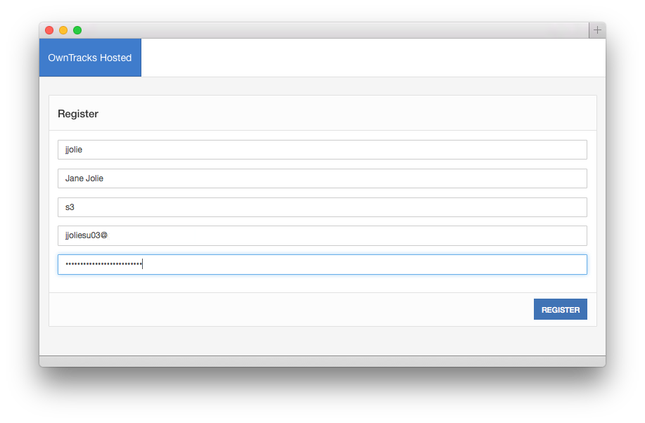
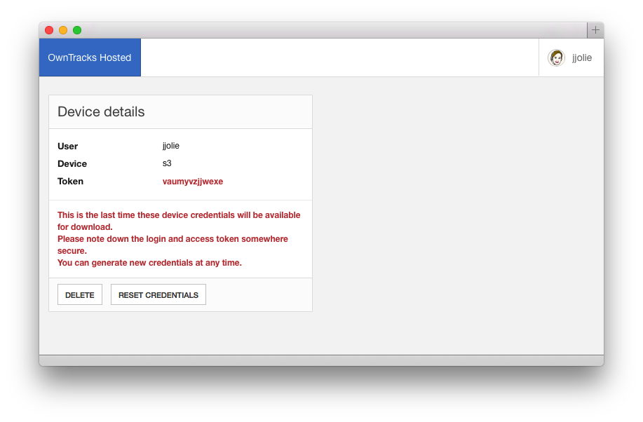
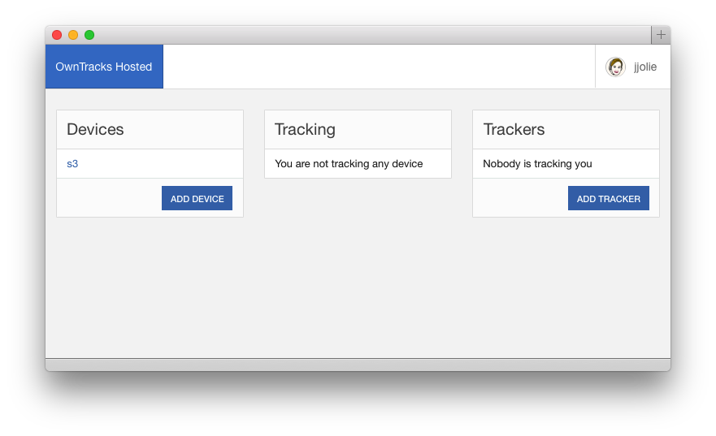
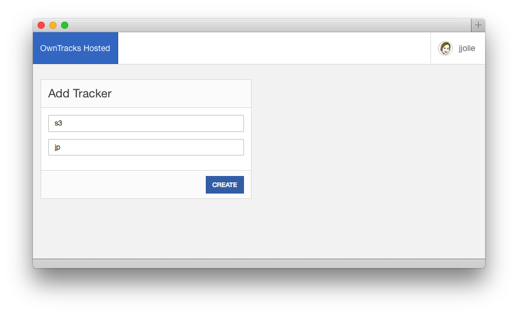
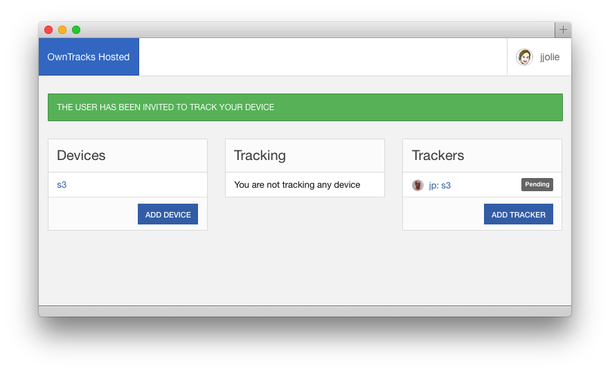
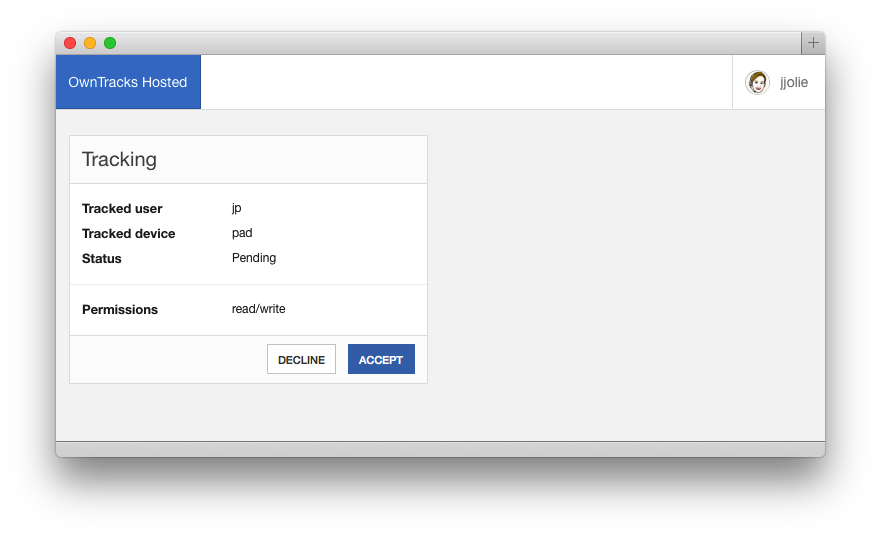
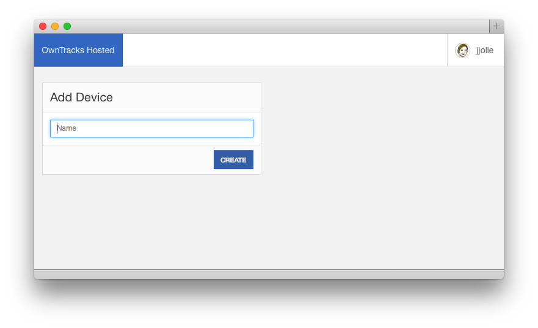
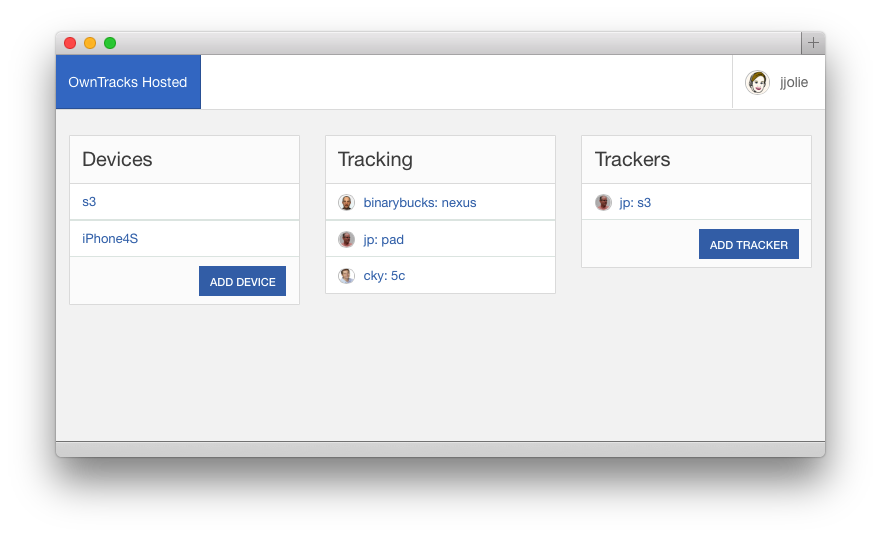

Hosted mode
As shortly described in scenarios, we offer a Hosted mode on a best-effort basis. We provide an MQTT broker to which you can connect a device or two. Or three. You can also invite OwnTracks friends to share their location with you or, let them see where you are.
- Register for an account
- Configure your devices
- Enjoy
You sign up for a free account at https://hosted.owntracks.org where you specify the following:

usernameis the the name with which your device will connect to our hosted broker, and it's the username by which your friends (if you invite anybody) will see you.Nameis your name. This will be visible to your friendsDevice nameis a name you give your deviceEmailis your valid e-mail address. We need this in order to send you notifications when a friend invites you to track themPasswordis a password for this Web site only. This is not the password you will use to actually connect to the service via MQTT.

As shown above, during registration you specify the name of a device you'll be using. This can be any name, but it must contain ASCII characters from the set [a-zA-Z0-9] only. We generate a special token for this device which you will use upon configuring OwnTracks on it. The credentials you use on your device are shown on the screen you then see, and these are shown exactly once and never again. As the page clearly says, keep a copy safe somewhere. (But you can regenerate this token at any time and re-configure your OwnTracks app to use that new token.) The token is a mumble-jumble of letters and digits.

This completes the initial setup, and you can now configure the OwnTracks apps to use Hosted mode with your username, your device name, and the token that was issued to you.
Trackers
The main page of our Web site is then shown with three columns:
- The list of devices you have created for yourself.
- The list of friends who are tracking one of your devices.
- The list of people you track.

Let's assume a friend of yours has also registered for Hosted mode, and you want to allow him to track your device. You add that friend as a Tracker, whereupon your friend will get an email asking her/him to confirm the tracking request. Simultaneously, you offer to let her/him track your s3 device. (You cannot track somebody without them seeing you as well -- it wouldn't be fair!)

This friend of yours (shown here as user jp) is added to your Friends with a status of Pending until your friend confirms the tracking request.

When your friend confirms your request, this is shown on the main page. The right column shows that jp is seeing your s3 device, and the center column shows that you have not yet confirmed you wish to track jp's pad device.
You can then accept to track this friend's device, but you can also decline the request.

Devices
If you want to add more devices to your account, go ahead: you enter a device name, and are then shown the access token which you use, together with your username and new device name to configure OwnTracks.

This new device is shown in the list of Devices, and you'll note that Jane hasn't shared this device with anybody because she needn't to.
